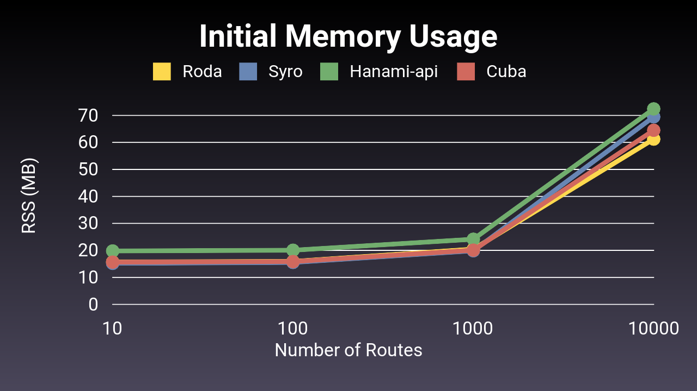
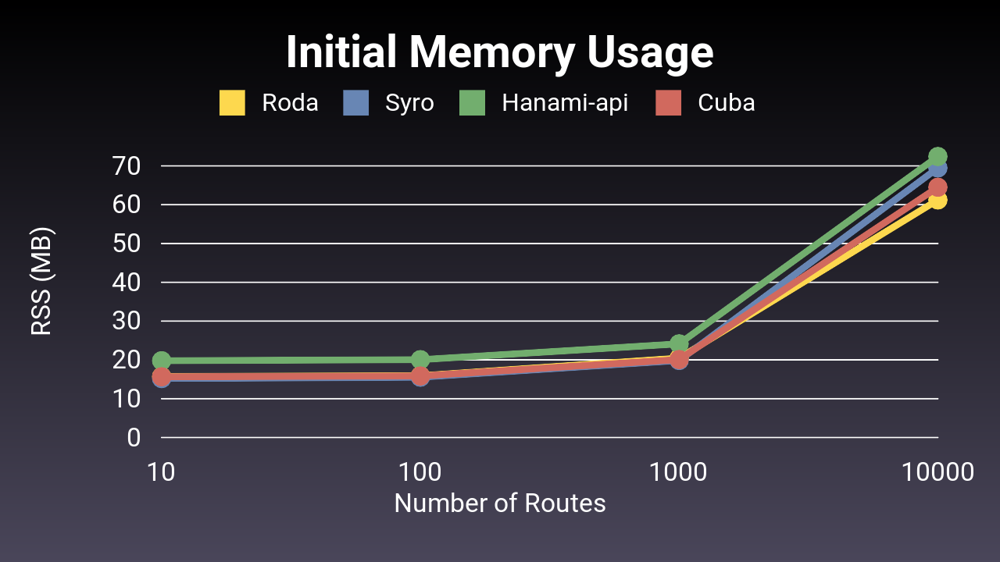

# cat config.ru
require "roda"
class App < Roda
route do |r|
# GET / request
r.root do
r.redirect "/hello"
end
# /hello branch
r.on "hello" do
# Set variable for all routes in /hello branch
@greeting = 'Hello'
# GET /hello/world request
r.get "world" do
"#{@greeting} world!"
end
# /hello request
r.is do
# GET /hello request
r.get do
"#{@greeting}!"
end
# POST /hello request
r.post do
puts "Someone said #{@greeting}!"
r.redirect
end
end
end
end
end
run App.freeze.app
A Modular, Scalable Ruby Framework
-
Built on Rack
Ruby's de facto webserver interface.
-
Flexible Architecture
Any design pattern for any application.
-
Rich Set of Included Plugins
Tools for every aspect of web development.
-
Simple, Reliable API
Currently at version 3.49.0
-
Security Focused
Encrypted sessions, per-form CSRF tokens.
-
Streaming Views & Assets
Mailers, JSON APIs, and more...
Learn Roda. It's Easy!
RubyConf 2014 - Roda: The Routing Tree Web Framework by Jeremy Evans
Watch Roda's lead developer guide you through design philosophy and basic functions. Get up and running in no time!
as measured by the r10k benchmark.
Comparison to Popular Ruby Web Frameworks


Data: Requests/Second | Initial Memory Usage
Comparison to Other Ruby Web Frameworks
 

Data: Requests/Second | Initial Memory Usage
Compare to Sinatra
Roda aims to take the ease of development and understanding that Sinatra brings, and enable it to scale to support the development of large web applications.
Continue Reading